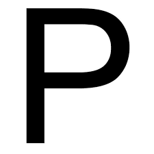
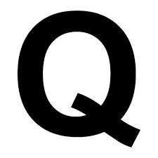

Píxel
El componente más pequeño y discreto de una imagen en un
monitor o pantalla. Es un punto mínimo. Mientras mayor es el número de pixeles por pulgada, mayor es la resolución.
P2P
Peer-to-Peer. Comunicación bilateral exclusiva entre dos
ersonas a través de Internet para el intercambio de información en general y de archivos en particular (ej, BitTorrent, eMule).
Protocolo
Descripción formal de formatos de mensaje y de reglas que
dos computadoras deben seguir para intercambiar dichos mensajes. Un protocolo puede describir detalles de bajo nivel de las interfaces máquina a máquina o intercambios de alto nivel entre programas de asignación de recursos.

Qmail
Popular programa utilizado generalmente en entorno Linux,
para manejar los emails de un servidor. Compite con Sendmail.
QR
El código QR (Quick Response) fue diseñado para ser
decodificado a alta velocidad. Es un código de barra de 2 dimensiones (2D) que consiste de módulos negros en forma de cuadrados, en un fondo blanco. La data codificada en el QR puede ser de cualquier tipo, como por ejemplo data binaria y alfanumerica.
Queue
Es "una fila" de paquetes en espera de ser procesados.
Rack
El Rack es un armario que ayuda a tener organizado todo
el sistema informático de una empresa. Posee unos soportes para conectar los equipos con una separación estándar de 19".
Raid
Array Independent Disk. RAID es un método de combinación
de varios discos duros para formar una única unidad lógica en la que se almacenan los datos de forma redundante. Ofrece mayor tolerancia a fallos y más altos niveles de rendimiento que un sólo disco duro o un grupo de discos duros independientes.
RAM
Random Access Memory (memoria de acceso aleatorio), es la
memoria temporal, que se borra apenas se apaga la computadora.